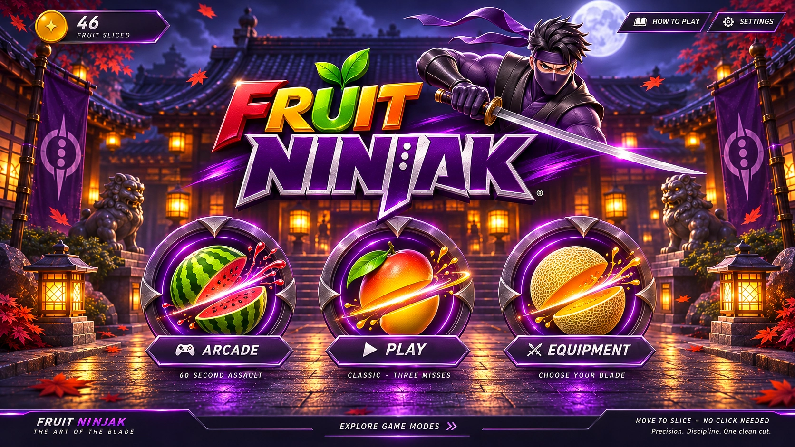

ENTERING THE DOJO

✦
0
FRUIT SLICED
HOW TO PLAY
SETTINGS
ARCADE
60 SECOND ASSAULT
PLAY
CLASSIC · THREE MISSES
EQUIPMENT
CHOOSE YOUR BLADE
SCORE
0
BEST
0
CLASSIC
3 / 3
MISSES REMAINING
×
Local storage is unavailable. Records last for this visit.
This game requires JavaScript. Enable JavaScript to enter the dojo.
LANDSCAPE MODE
Rotate to landscape.
Turn your device sideways to play.
Your mission will wait.
LOCK LANDSCAPE